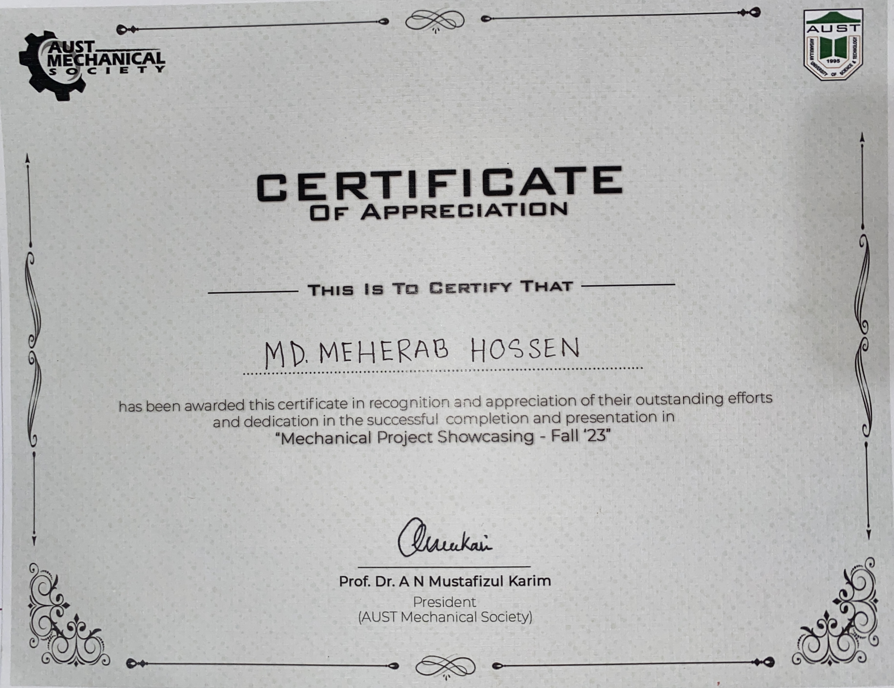
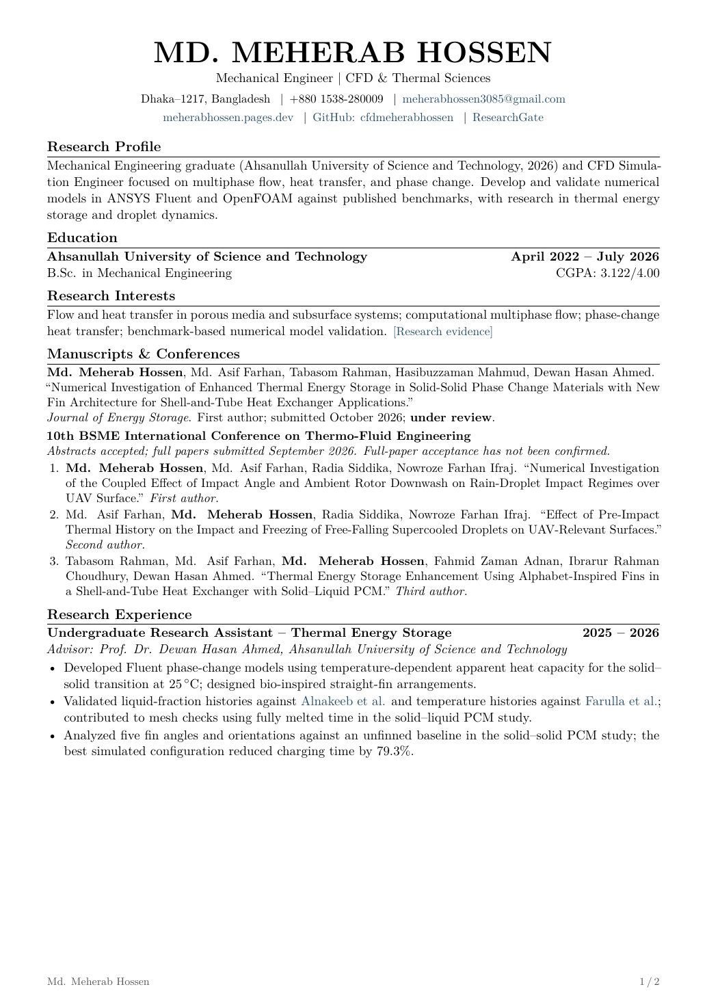
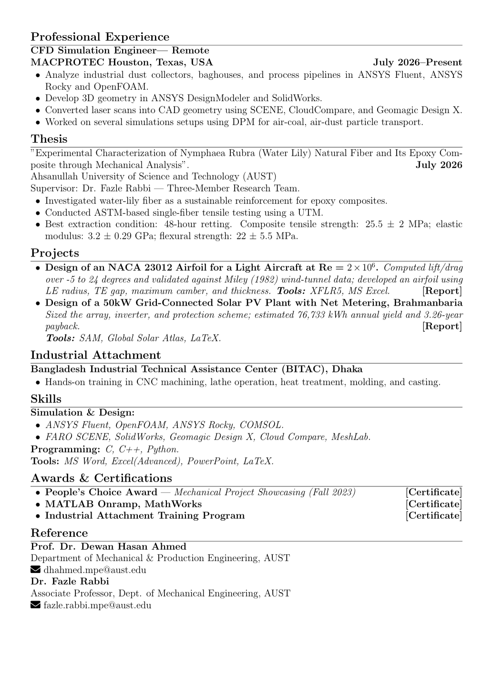

01
CFD Simulation Engineer
Computational modelling focused on multiphase flow, heat transfer and phase change.
Methods & tools →
Mechanical Engineering Portfolio
Welcome to my engineering portfolio. I’m a Mechanical Engineering graduate of AUST and a CFD Simulation Engineer at MACPROTEC, USA. My work explores fluid motion, heat transfer and phase change through computational modelling.
Multiphase flow, phase change materials and thermal energy storage.
ANSYS Fluent and OpenFOAM, with comparisons against published studies.
Open to graduate study and research collaboration in computational modelling.
Professional work, academic foundations and ongoing research.
Computational modelling focused on multiphase flow, heat transfer and phase change.
Methods & tools →Research interests in thermal sciences and fluid mechanics. Undergraduate thesis on water-lily natural fibre and epoxy composites.
Education details →Validating thermal energy storage models, investigating PCM-loaded building materials, and modelling droplet deformation and freezing.
Explore research →Explore the models, validation studies and experiments behind my work.

I graduated in Mechanical Engineering from Ahsanullah University of Science and Technology (AUST) in July 2026. I work remotely as a CFD Simulation Engineer with MACPROTEC, USA.
My research interests centre on multiphase flow, heat transfer and phase change. My current work includes numerical validation of thermal energy storage models, PCM-loaded building materials, and droplet deformation and freezing using ANSYS Fluent and OpenFOAM.
I am open to graduate study and research collaboration in fluid dynamics, thermal sciences and computational modelling. Get in touch to discuss research interests and potential projects.
Interested in fluid dynamics, thermal sciences or computational modelling?
Get in touch
Bachelor of Science in Mechanical Engineering
Tejgaon Industrial Area, Dhaka 1208, Bangladesh

Higher Secondary Certificate
Uttara, Dhaka 1230, Bangladesh

Secondary School Certificate
Sapahar, Naogaon, Bangladesh
Coursework and training projects in machine design, instrumentation and manufacturing.
ME 3201 Machine Design · ANSYS Workbench 2021 R2, Autodesk Inventor, SolidWorks
Designed and analysed the gear train driving a rotary screw compressor, from ratio selection and tooth geometry through to stress checks on the loaded members.
Open the reportME 3202 Machine Design Sessional · ANSYS Workbench 2021 R2, SolidWorks
Sized a belt drive for a starter motor, covering pulley geometry, belt selection, tension and power transmission, with CAD and FEA support.
With Jubaida Hossain Basoti, Eyaman Islam and Rakibul Hasan Shawon. Supervised by Mr. Nasim Mia, Lecturer, Department of Mechanical and Production Engineering.
Open the reportME 3110 Instrumentation & Measurement Sessional · Arduino IDE, SolidWorks
Built an Arduino Uno system with pH, turbidity, TDS and temperature sensors to judge water safety for drinking, agriculture and environmental use. The build handled automated data collection, wireless monitoring and on-screen results.
First place by audience choice at Mechanical Project Showcasing, Fall 2023.
Open the reportAttachment Training Programme · Bangladesh Industrial Technical Assistance Centre
Hands-on training in heat treatment, CNC machining, lathe operation, moulding and casting, which built up a working picture of both traditional and advanced manufacturing processes. Served as team leader for the programme.
Open the reportME 4201 Power Plant Engineering · NREL System Advisor Model, Global Solar Atlas, SREDA Net Metering Calculator
Designed a ground-mounted 50 kWp solar plant for a mixed college, shop and household load in Brahmanbaria, from the hourly demand profile and solar resource assessment through to module and inverter sizing, string layout and grid interconnection. Annual yield and system losses were simulated in SAM; net metering savings, payback and avoided emissions were worked out against the SREDA 2025 guideline.
Open the reportME 4205 Mechatronics · LabVIEW
Built one LabVIEW program covering three experiments: sensible heat exchange with absorbed and released indicators, two-signal vibration analysis with FFT and power spectral density, and pipe flow with Reynolds-based laminar, transitional and turbulent classification. The flow panel flags results above Re 25000, where the laminar solution no longer holds.
Supervised by Dr. Qazi Talal, Assistant Professor, Department of Mechanical and Production Engineering.
Open the reportNumerical studies in thermal energy storage, building energy and multiphase heat transfer using ANSYS Fluent and OpenFOAM, alongside experimental work on natural-fibre composites. The numerical studies include model validation against published research.
Thermal energy storage · Numerical validation
Research focus: The thermal behaviour of phase change materials during charging and discharging, and the effect of model parameters on heat transfer.

Building energy · Numerical validation
Research focus: The thermal response and energy-saving potential of plaster containing solid–solid phase change materials.

Multiphase flow · Work in progress · ANSYS Fluent & OpenFOAM
Research focus: Droplet deformation and heat transfer during free fall, impact and freezing.
This figure compares my numerical results with Two-dimensional analogies to the deformation characteristics of a falling droplet and its collision by A. H. Rafi, M. R. Haque and D. H. Ahmed (2022) [4]. The comparison is used to assess the simulation's representation of droplet deformation and collision behaviour.

This figure compares my numerical results with Simultaneous impact of droplet pairs on solid surfaces by A. Goswami and Y. Hardalupas (2023) [5]. The reference study provides a benchmark for assessing droplet-pair impact and the resulting deformation on a solid surface.

Thermal energy storage · Numerical validation
Research focus: The thermal behaviour of phase change materials during charging and discharging, and the effect of model parameters on heat transfer.

Undergraduate thesis · Experimental research · Completed July 2026
Thesis: Experimental Characterization of Nymphaea Rubra (Water Lily) Natural Fiber and Its Epoxy Composite through Mechanical Analysis.
AUST · Supervisor: Dr. Fazle Rabbi · Three-member research team
Research focus: Water-lily natural fibre as a sustainable reinforcement for epoxy-based polymer composites.
Published studies used as benchmarks and background for the work above.
Eccentricity optimization of an inner flat-tube double-pipe latent-heat thermal energy storage unit
View on publisher siteNumerical investigation on consecutive charging and discharging of PCM with modified longitudinal fins in shell and tube thermal energy storage
View on publisher siteExperiments and Modeling of Solid–Solid Phase Change Material-Loaded Plaster to Enhance Building Energy Efficiency
View on publisher siteTwo-dimensional analogies to the deformation characteristics of a falling droplet and its collision
View on publisher siteSimultaneous impact of droplet pairs on solid surfaces,
View on publisher siteImpacting-freezing dynamics of a supercooled water droplet on a cold surface: Rebound and adhesion
View on publisher siteAn experimental and numerical study on the effect of inclination angle of phase change materials thermal energy storage system
View on publisher siteSimulation animations, laboratory work and project demonstrations.
Videos will be added here as they become available.
MathWorks Training Services · 26 December 2024
Hands-on practice in matrix manipulation, scripting, automation, data visualisation and control structures, which laid the groundwork for computational analysis and engineering simulation.

AUST Mechanical Society · Mechanical Project Showcasing, Fall 2023
Certificate of appreciation for the Arduino-based water quality monitoring system, which took first position by audience choice.

BITAC, Ministry of Industries, Government of Bangladesh · March 2024
Completed the attachment training programme as team leader, which sharpened technical and analytical skills alongside coordination and decision-making.

Contours, meshes and plots from simulation and laboratory work.


Mechanical Project Showcasing, Fall 2023 · AUST Mechanical Society
Our team built an Arduino Uno system with pH, turbidity, TDS and temperature sensors for real-time water analysis. It took first position by audience choice among all project groups, for its take on IoT-driven environmental monitoring.


Journal and conference submissions, as listed in my CV. Submission and review status are shown separately from published work.
Numerical Investigation of Enhanced Thermal Energy Storage in Solid–Solid Phase Change Materials with New Fin Architecture for Shell-and-Tube Heat Exchanger Applications
Extending Weber–Ohnesorge Regime Maps to Oblique and Shear-Driven Droplet Impact on UAV Surfaces: A VOF-Based Parametric Study
Coupling Pre-Impact Thermal History to Resolved Freezing Dynamics of Free-Falling Supercooled Droplets on UAV-Relevant Cold Surfaces
Thermal Energy Storage Enhancement Using Alphabet-Inspired Fins in a Shell-and-Tube Heat Exchanger with Solid–Liquid PCM
Open to research collaboration and graduate study in fluid dynamics, thermal sciences and computational modelling.
Gmail sign-in may be required. You can also copy the email address above into your preferred email service.
Md. Meherab Hossen · Mechanical Engineering & CFD
Download resume PDF Open PDF in a new tab ↗
